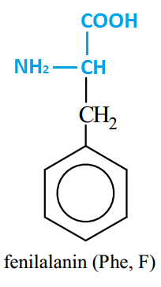
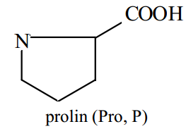
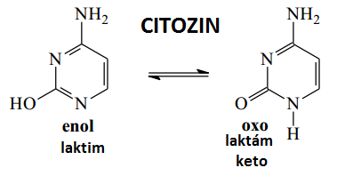
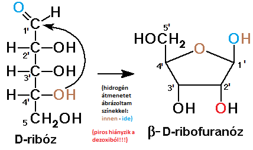
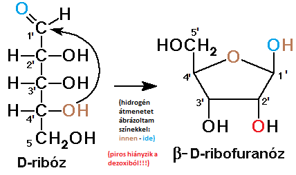

Képletek.
glicin

alanin

valin

leucin

izoleucin

szerin

treonin

cisztein & cisztin

metionin

aszparaginsav

aszparagin
glutaminsav

glutamin

lizin

arginin

fenil-alanin
-

tirozin
hisztidin

triptofán

szelenocisztein

prolin
-

citozin
-

- 5metil jelentősége ► DNS silenceléskor ilyen lesz
5metil / 5hidroximetil képlete?

timin

uracil
adenin

guanin
ribóz D/L "sima" (nem gyűrűs)
-
összes legyen bal/jobb oldalt!! különben már más a neve (arabinóz,xilóz lásd képlettár!)

(dezoxi)ribóz "gyűrűs szerkezete"
 

ammónium-szulfát
-
[(NH4)2SO4]
adenozin képlete?
-
purinnál 9 és 1' között van a β-N-glikozidos kötés!!!

uridin képlete?
-
pirimidinnél 1 és 1' között van a β-N-glikozidos kötés!!!

bázispárok

SDS

urea

guanidin-klorid
pirrol

hem
- 4db pirrol, melyeket -C= (ún. metin-csoport) kapcsol össze
- 2pirrol-ban nincs hidrogén
- másik 2pirrol, ha lead 2protont, akkor 2x negatív töltésű lesz ➜ eloszlik a 4 N-on, így középen Fe2+/Fe3+ képesek megkötni ➜ együtt alkotják a hem-et
- delokalizált elektronokból mi következik? ► számuk alapján aromás rendszer, így stabil, és egy síkú az egész
- oldalláncai
- ionos ➜ 2db proprionsav ➜ helyzete? myoglobin felszíne felé orientált
- apoláros ➜ 2db vinil és 2db metil ➜ funkció ► myoglobin apoláros belsejével London-kötések
- hem milyen vegyület? ► kelát-komplex ✽
porfirin
hem = porfirin -2H + Fe2+/Fe3+


 része pedig az apoláros oldaláncokkal alkot kötést ➜ így kb. a fehérjék negatív töltése arányos lesz a tömegükkel (). Így a töltéstől !!! már nem fog függni. Ezenkívül az alakjuk is "másodlagos szerkezetre leredukálódik": összesnek lineáris lesz ➜ attól sem fog függni már. Tehát kizárólag a tömegtől függ az elmozdulás mértéke.
része pedig az apoláros oldaláncokkal alkot kötést ➜ így kb. a fehérjék negatív töltése arányos lesz a tömegükkel (). Így a töltéstől !!! már nem fog függni. Ezenkívül az alakjuk is "másodlagos szerkezetre leredukálódik": összesnek lineáris lesz ➜ attól sem fog függni már. Tehát kizárólag a tömegtől függ az elmozdulás mértéke. {kind=link}